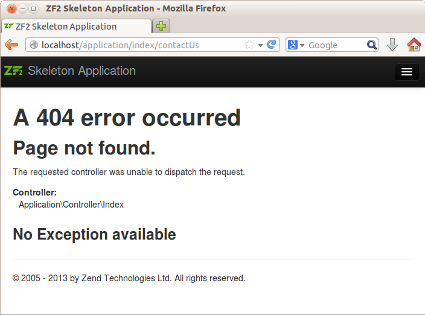

3.16. Страницы ошибок.
Когда страница не может быть найдена или в вашем веб-приложении происходит какая-то другая ошибка, отображается стандартная страница ошибки. Появление страницы ошибки контролируется шаблонами ошибок. Существует два шаблона ошибок: error/404, который используется для ошибки "404 Page Not Found" (см. рисунок 4.10), и error/index, который отображается, когда происходит общая ошибка (например, необработанное исключение выбрасывается внутрь приложения).
 Рисунок 4.10. 404 Error Page
Файл module.config.php содержит несколько параметров под ключом view_manager , которые вы можете использовать для конфигурации отображения ваших шаблонов ошибок:
<?php
return [
//...
'view_manager' => [
'display_not_found_reason' => true,
'display_exceptions' => true,
//...
'not_found_template' => 'error/404',
'exception_template' => 'error/index',
'template_map' => [
//...
'error/404' => __DIR__ . '/../view/error/404.phtml',
'error/index'=> __DIR__ . '/../view/error/index.phtml',
],
//...
],
];
- Параметр display_not_found_reason контролирует, отображать ли детальную информацию о ошибке "Page not Found".
- Параметр display_exceptions определяет, отображать ли информацию о необработанных исключениях и его трассировки стека.
- not_found_template определяет имя шаблона для 404 ошибки.
- exception_template указывает имя шаблона для ошибки необработанного исключения.
Как правило, при разработке вы ставите параметры display_not_found_reason и display_exceptions на
false, потому что вы не хотите, чтобы ваши посетители видели детали ошибок на вашем сайте. Однако, вы все равно сможете извлекать детальную информацию из файла Apacheerror.log..